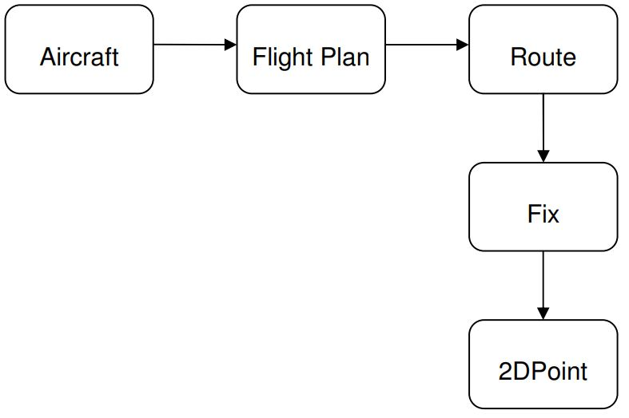
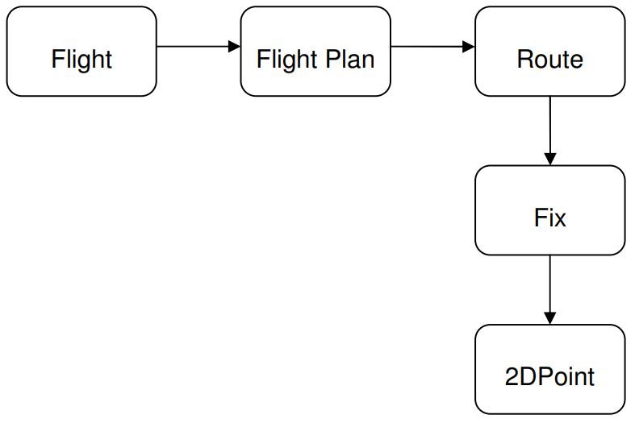

The Ubiquitous Language
A necessidade de uma linguagem comum
O capítulo anterior argumentou que é absolutamente necessário desenvolver um modelo do domínio fazendo com que os especialistas de software trabalhem com os especialistas do domínio; no entanto, essa abordagem geralmente apresenta algumas dificuldades iniciais devido a uma barreira fundamental de comunicação. Os desenvolvedores têm suas mentes cheias de classes, métodos, algoritmos, padrões e tendem a sempre fazer uma correspondência entre um conceito da vida real e um artefato de programação. Eles querem ver quais classes de objetos criar e quais relacionamentos modelar entre eles. Eles pensam em termos de herança, polimorfismo, POO, etc. E eles falam assim o tempo todo. E é normal que o façam. Desenvolvedores serão desenvolvedores. Mas os especialistas de domínio geralmente não sabem nada sobre nada disso. Eles não têm idéia sobre bibliotecas de software, frameworks, persistência, em muitos casos nem mesmo bancos de dados. Eles sabem sobre sua área específica de especialização.
No exemplo de monitoramento de tráfego aéreo, os especialistas do domínio sabem sobre aviões, sobre rotas, altitudes, longitudes e latitudes, eles sabem sobre desvios da rota normal, sobre trajetórias de avião. E eles falam sobre essas coisas em seu próprio jargão, que às vezes não é tão fácil de seguir por alguém de fora.
Para superar essa diferença de estilo de comunicação, quando construímos o modelo, devemos nos comunicar para trocar ideias sobre o modelo, sobre os elementos envolvidos no modelo, como os conectamos, o que é relevante e o que não é. A comunicação neste nível é primordial para o sucesso do projeto. Se um diz algo e o outro não entende ou, pior ainda, entende outra coisa, quais são as chances de o projeto dar certo?
Um projeto enfrenta sérios problemas quando os membros da equipe não compartilham uma linguagem comum para discutir o domínio. Os especialistas do domínio usam seu jargão, enquanto os membros da equipe técnica têm sua própria linguagem ajustada para discutir o domínio em termos de design.
A terminologia das discussões do dia-a-dia é desconectada da terminologia incorporada ao código (em última análise, o produto mais importante de um projeto de software). A mesma pessoa usa linguagem diferente na fala e na escrita, de modo que as expressões mais incisivas do domínio muitas vezes emergem de forma transitória que nunca é captada no código ou mesmo na escrita.
Durante essas sessões de comunicação, a tradução é frequentemente usada para permitir que os outros entendam sobre o que são alguns conceitos. Os desenvolvedores podem tentar explicar alguns padrões de design usando a linguagem de um leigo e, às vezes, sem sucesso. Os especialistas do domínio se esforçarão para trazer para casa algumas de suas ideias, provavelmente criando um novo jargão. Durante esse processo a comunicação sofre, e esse tipo de tradução não auxilia no processo de construção do conhecimento.
Costumamos usar nossos próprios dialetos durante essas sessões de design, mas nenhum desses dialetos pode ser um idioma comum porque nenhum atende às necessidades de todos.
Definitivamente, precisamos falar a mesma língua quando nos reunimos para falar sobre o modelo e defini-lo. Qual será o idioma? A linguagem dos desenvolvedores? A linguagem dos especialistas de domínio? Algo no meio?
Um princípio central do design orientado a domínio é usar uma linguagem baseada no modelo. Como o modelo é o terreno comum, o lugar onde o software encontra o domínio, é apropriado usá-lo como base para a construção dessa linguagem.
Use o modelo como a espinha dorsal de uma linguagem. Solicite que a equipe use a linguagem de forma consistente em todas as comunicações e também no código. Ao compartilhar conhecimento e elaborar o modelo, a equipe usa fala, escrita e diagramas. Certifique-se de que essa linguagem apareça de forma consistente em todas as formas de comunicação utilizadas pela equipe; por esta razão, a linguagem é chamada de Linguagem Ubíqua.
A Linguagem Ubíqua conecta todas as partes do design e cria a premissa para que a equipe de design funcione bem. Leva semanas e até meses para que os projetos de grande escala tomem forma. Os membros da equipe descobrem que alguns dos conceitos iniciais foram incorretos ou usados de forma inadequada, ou descobrem novos elementos do projeto que precisam ser considerados e se encaixam no projeto geral. Tudo isso não é possível sem uma linguagem comum.
Os idiomas não aparecem da noite para o dia. É preciso muito trabalho e muito foco para garantir que os elementos-chave da linguagem sejam trazidos à luz. Precisamos encontrar os conceitos-chave que definem o domínio e o design, encontrar palavras correspondentes para eles e começar a usá-los. Alguns deles são facilmente identificados, mas alguns são mais difíceis.
Resolva as dificuldades experimentando expressões alternativas, que refletem modelos alternativos. Em seguida, refatore o código, renomeando classes, métodos e módulos para se adequar ao novo modelo. Resolva a confusão sobre os termos na conversa, da mesma forma que chegamos a um acordo sobre o significado das palavras comuns.
Construir uma linguagem como essa tem um resultado claro: o modelo e a linguagem estão fortemente interconectados um com o outro. Uma mudança na linguagem deve se tornar uma mudança no modelo.
Especialistas de domínio devem se opor a termos ou estruturas que sejam desajeitados ou inadequados para transmitir a compreensão do domínio. Se os especialistas de domínio não puderem entender algo no modelo ou na linguagem, é mais provável que haja algo errado com isso. Por outro lado, os desenvolvedores devem ficar atentos a ambiguidades ou inconsistências que tendem a aparecer no design.
Criando a Ubiquitous Language
Como podemos começar a construir uma linguagem? Aqui está um diálogo hipotético entre um desenvolvedor de software e um especialista de domínio no projeto de monitoramento de tráfego aéreo. Cuidado com as palavras que aparecem sublinhadas:
Desenvolvedor: Queremos monitorar o tráfego aéreo. Por onde começamos?
Especialista: Vamos começar com o básico. Todo esse tráfego é feito de aviões.
Cada avião decola de um local de partida e pousa em um local de destino.
Desenvolvedor: Isso é fácil. Quando ele voa, o avião pode escolher qualquer caminho aéreo
que os pilotos gostem? Cabe a eles decidir qual caminho devem seguir, desde que cheguem ao
destino?
Especialista: Ah, não. Os pilotos recebem uma rota que devem seguir. E eles devem
ficar nessa rota o mais próximo possível.
Desenvolvedor: Estou pensando nessa rota como um caminho 3D no ar. Se usarmos um
sistema cartesiano de coordenadas, a rota é simplesmente uma série de pontos 3D.
Especialista: Eu não acho. Não vemos a rota dessa forma. A rota é, na
verdade, a projeção no solo da trajetória aérea esperada do avião. A rota passa por uma
série de pontos no solo determinados por sua latitude e longitude.
Desenvolvedor: OK, então vamos chamar cada um desses pontos de correção, porque é um
ponto fixo da superfície da Terra. E usaremos então uma série de pontos 2D para descrever
o caminho. E, a propósito, a partida e o destino são apenas correções. Não
devemos considerá-los como conceitos separados. A rota atinge o destino assim que atinge
qualquer outro ponto fixo. O avião deve seguir a rota, mas isso significa que ele pode
voar tão alto ou tão baixo quanto quiser?
Especialista: Não. A altitude que um avião deve ter em um determinado momento
também é estabelecida no plano de voo.
Desenvolvedor: Plano de voo? O que é isso?
Especialista: Antes de sair do aeroporto, os pilotos recebem um plano de voo
detalhado que inclui todos os tipos de informações sobre o voo: a rota,
altitude de cruzeiro, velocidade de cruzeiro, tipo de avião, até
informações sobre os tripulantes.
Desenvolvedor: Hmm, o plano de voo parece muito importante para mim. Vamos
incluí-lo no modelo.

Desenvolvedor: Melhor assim. Agora que estou olhando para isso, percebo algo. Quando
estamos monitorando o tráfego aéreo, não estamos realmente interessados nos aviões em si, se são
brancos ou azuis, ou se são Boeing ou Airbus. Estamos interessados é no voo deles. Isso é
o que estamos realmente rastreando e medindo. Acho que deveríamos mudar um pouco o modelo para
ser mais preciso.
Observe como essa equipe, falando sobre o domínio do monitoramento de tráfego aéreo e em torno de seu modelo incipiente, está aos poucos criando uma linguagem composta pelas palavras sublinhadas. Observe também como essa linguagem muda o modelo!
No entanto, na vida real, esse diálogo é muito mais detalhado, e as pessoas muitas vezes falam sobre as coisas indiretamente, ou entram em muitos detalhes, ou escolhem os conceitos errados; isso pode dificultar muito a criação da linguagem. Para começar a lidar com isso, todos os membros da equipe devem estar cientes da necessidade de criar uma linguagem comum e devem ser lembrados de manter o foco no essencial e usar a linguagem sempre que necessário. Devemos usar nosso próprio jargão durante essas sessões o mínimo possível, e devemos usar a Linguagem Ubíqua porque isso nos ajuda a nos comunicar com clareza e precisão.
Também é altamente recomendável que os desenvolvedores implementem os principais conceitos do modelo no código. Uma classe pode ser escrita para Route e outra para Fix. A classe Fix pode herdar de uma classe 2DPoint ou pode conter um 2DPoint como seu atributo principal. Isso depende de outros fatores que serão discutidos mais adiante. Ao criar classes para os conceitos de modelo correspondentes, estamos mapeando entre o modelo e o código e entre a linguagem e o código. Isso é muito útil, pois torna o código mais legível e reproduz o modelo. Ter o código expressando o modelo compensa mais tarde no projeto, quando o modelo cresce e quando mudanças no código podem ter consequências indesejáveis se o código não for projetado adequadamente.
Vimos como a linguagem é compartilhada por toda a equipe, e também como ela ajuda na construção do conhecimento e na criação do modelo. O que devemos usar para a linguagem? Apenas discurso? Usamos diagramas. O quê mais? Escrita?
Alguns podem dizer que a UML é boa o suficiente para construir um modelo. E, de fato, é uma ótima ferramenta para escrever conceitos-chave como classes e expressar relacionamentos entre eles. Você pode desenhar quatro ou cinco classes em um bloco de desenho, escrever seus nomes e mostrar as relações entre elas. É muito fácil para todos seguir o que você está pensando, e uma expressão gráfica de uma ideia é fácil de entender. Todos compartilham instantaneamente a mesma visão sobre um determinado tópico, e fica mais simples se comunicar com base nisso. Quando surgem novas ideias e o diagrama é modificado para refletir a mudança conceitual.
Diagramas UML são muito úteis quando o número de elementos envolvidos é pequeno. Mas UML pode crescer como cogumelos depois de uma boa chuva de verão. O que você faz quando tem centenas de aulas preenchendo uma folha de papel tão longa quanto Mississippi? É difícil de ler até mesmo pelos especialistas em software, sem mencionar os especialistas em domínio. Eles não entenderão muito quando ficar grande, e o faz mesmo para projetos de tamanho médio.
Além disso, a UML é boa para expressar classes, seus atributos e relacionamentos entre elas. Mas o comportamento das classes e as restrições não são tão facilmente expressos. Para isso a UML recorre ao texto colocado como notas no diagrama. Portanto, a UML não pode transmitir dois aspectos importantes de um modelo: o significado dos conceitos que ela representa e o que os objetos devem fazer. Mas tudo bem, já que podemos adicionar outras ferramentas de comunicação para fazer isso.
Podemos usar documentos. Uma maneira aconselhável de comunicar o modelo é fazer alguns pequenos diagramas, cada um contendo um subconjunto do modelo. Esses diagramas conteriam várias classes e o relacionamento entre elas. Isso já inclui boa parte dos conceitos envolvidos. Em seguida, podemos adicionar texto ao diagrama. O texto explicará o comportamento e as restrições que o diagrama não consegue. Cada uma dessas subseções tenta explicar um aspecto importante do domínio, aponta um “foco” para iluminar uma parte do domínio.
Esses documentos podem até ser desenhados à mão, pois transmitem a sensação de que são temporários, podendo ser alterados em um futuro próximo, o que é verdade, pois o modelo é alterado muitas vezes no início antes de atingir um status mais estável.
Pode ser tentador tentar criar um diagrama grande em todo o modelo. No entanto, na maioria das vezes, esses diagramas são quase impossíveis de montar. Além disso, mesmo que você consiga fazer esse diagrama unificado, ele ficará tão confuso que não transmitirá o entendimento melhor do que a coleção de pequenos diagramas.
Desconfie de documentos longos. Leva muito tempo para escrevê-los, e eles podem se tornar obsoletos antes de serem concluídos. Os documentos devem estar em sincronia com o modelo. Documentos antigos, usando a linguagem errada e não refletindo o modelo não são muito úteis. Tente evitá-los quando possível.
Também é possível se comunicar usando código. Essa abordagem é amplamente defendida pela comunidade XP. Um código bem escrito pode ser muito comunicativo. Embora o comportamento expresso por um método seja claro, o nome do método é tão claro quanto seu corpo? As afirmações de um teste falam por si, mas e os nomes das variáveis e a estrutura geral do código? Eles estão contando toda a história, alto e claro? O código, que funcionalmente faz a coisa certa, não expressa necessariamente a coisa certa. Escrever um modelo em código é muito difícil.
Existem outras maneiras de se comunicar durante o projeto. Não é o propósito deste livro apresentar todos eles. Uma coisa, no entanto, é clara: a equipe de design, composta por arquitetos de software, desenvolvedores e especialistas em domínio, precisa de uma linguagem que unifique suas ações e os ajude a criar um modelo e expressá-lo com código.